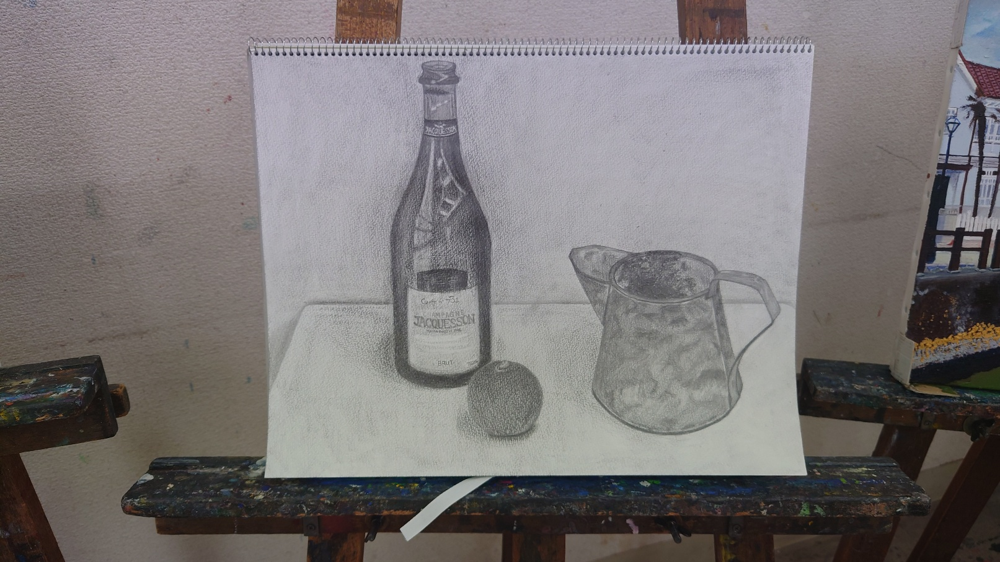
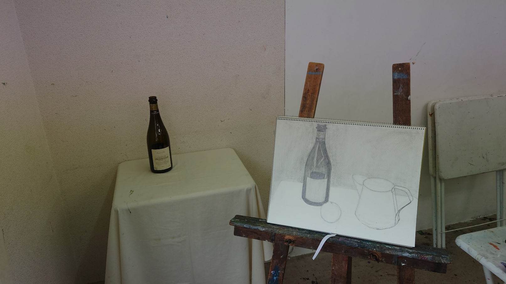
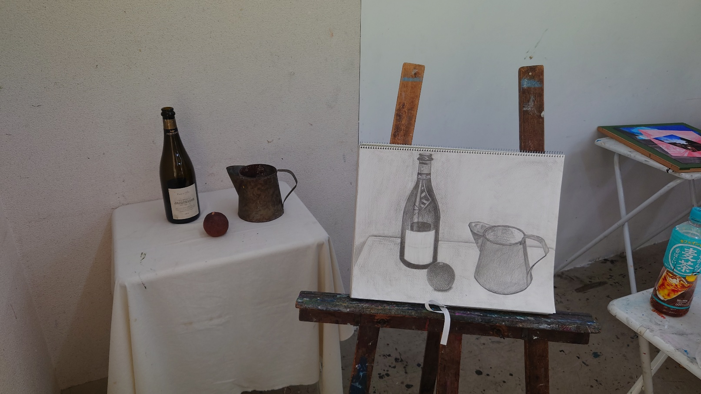

It's hard to find someone who is a good match for me at work.
Last year, I wanted to learn a new tool for checking ads.
I had used a different tool as a reviewer, so I wasn't familiar with the new one.
I attended the new hire tool training, and I found a coworker who was a great teacher.
She was motivated and a quick learner. I really liked her, and I wanted to teach her everything I knew.
But she quit her job and is going back to Korea tomorrow because she's not well.
Today was our last day together in Japan. We ate Korean food and talked a lot.
I can't believe I only worked with her for 8 months.
I enjoyed working with her and learned a lot. I hope to see her again soon.
She gave me Flowers, a letter, and a book
2023/07/27 Thursday
Some of my co-workers are going to quit the company.
This has me feeling disturbed.
I also want to change jobs, but I haven't found a good company yet.
I've learned a lot of things at this company.
But there isn't anything new for me to learn anymore.
That's why I'm not enjoying my job.
I want to grow every day, and I hate a life without growth.
2023/07/26 Wednesday
I'm changing the design of my homepage.
I've added a background image, and I'm going to add a comment function and a YouTube page that teaches Korean for foreigners.
Even if I fail, I enjoy finding problems and trying to solve them.
Coding is like drawing. These are the joys of my life these days.
2023/07/25 Tuesday
I try to avoid eating red meat as much as possible.
Instead, I usually eat chicken and seafood. I especially love to eat sea vegetables.
But maybe I can't eat them anymore.
Japan plans to discharge contaminated water from nuclear power plants into the sea. The sea is not just for Japan.
Some people say that contaminated water from nuclear power plants is safe.
Do they really believe that? I think nobody knows the result.
If a lot of people lose their health, who will be held responsible?
I am very scared about this.
2023/07/24 Monday
I try to avoid eating red meat as much as possible.
Instead, I usually eat chicken and seafood. I especially love to eat sea vegetables.
But maybe I can't eat them anymore.
Japan plans to discharge contaminated water from nuclear power plants into the sea. The sea is not just for Japan.
Some people say that contaminated water from nuclear power plants is safe.
Do they really believe that? I think nobody knows the result.
If a lot of people lose their health, who will be held responsible?
I am very scared about this.
2023/07/23 Sunday
I feel anxious about my future, the climate crisis, and the world's economic woes.
These seem like different problems, but they are closely connected.
In my opinion, people need to solve environmental problems first.
We need to produce less and consume less.
I've heard that there is too much clothing waste.
Clothing companies produce far more clothes than we need.
And they produce a lot of synthetic fibers that cannot be recycled during the manufacturing process.
Perhaps if capitalism continues, these problems will not change.
2023/07/22 Saturday
I am struggling with my career.
I don't know what to do first.
I think I need to study English, learn about IT, and develop my management skills.
Can I become a project manager in this life?
Honestly, I don't know if that's my goal. What do I ultimately want?
2023/07/21 Friday
I watched a YouTube channel called "Doctor Friends”.
They introduced a career test called MOCA.
I am preparing to change jobs, so I was tempted to take the test.
After work, I took the test with my friend. I will receive the results in two days.
I hope the test will help me with my job change.
2023/07/20 Thursday
Due to environmental pollution, the earth is getting hotter and hotter.
As a result, abnormal weather phenomena are happening in many countries.
A lot of people have died because of this.
If we do not change our lifestyle, our future will not come.
I am afraid of a shortage of food and an infectious disease epidemic.
We are in trouble. Can we get out of this crisis?
2023/07/19 Wednesday
Korea is having a hard time right now. It rained too much, and many people died. In my opinion, it's very important who is a leader.
In the government of Yoon Suk Yeol, leaders aren't working, and even when problems happen, they don't take responsibility.
It seems like Korea is in an anarchical condition.
I'm worried about Korea.
2023/07/18 Tuesday
I got to know the Myers-Briggs Type Indicator (MBTI) when I was a high school student.
At that time, the test said I was an ENFP. But I thought it was a little different.
When I got to know myself better, I took the test again. The result was ENTP.
I believe this type explains me well. The MBTI test is helpful in my work environment.
I like the Enneagram test more. But since the Enneagram is more complex than the MBTI, people like the MBTI more.
2023/07/17 Monday
Sometimes I lose my motivation.
At that time, I don't want to meet anybody that I know.
I did my best for work and co-workers, but now I don't know if it was a good thing.
I'm very tired both physically and mentally. I want to leave far away and rest quietly.
I don't want to prove my ability anymore. I'm so sad.
2023/07/16 Sunday
I have a sore on my tongue. I'm very tired of my company, so I want to quit my job as soon as possible.
I've been working in this company for 3 years and 4 months.
I've learned a lot, but I don't know what the future holds.
I have to go to work on Tuesday, but I don't want to go anymore.
I'm not enjoying this job, and I can't deal with it anymore.
I hope to change jobs at least by September.
2023/07/15 Saturday
I went to the art class, and drew. I spent most of my class time, retouching the bottle that I drew last time.
am
pm 
I love drawing. It's not hard to me drawing all day.
If possible, I want to go to the art class every Saturday.
But I don't have enough time to draw.
So I plan to go to the art class, after the examination.
I also have to finish the translation.
From today to Monday are holidays. During these holidays I'll do my best.
I set up a standard about English. The goal is to discuss in English.
2023/07/13 Thursday
Since two days ago I've hurt my eyes.
So I didn't wear contact lens two days.
Even I didn't wear glasses.
I couldn't see well, but it's ok than I thought.
My co-worker gave me eye drops. I'm moved about her consideration.
2023/07/12 Wednesday
I'm very exhausted now.
I wanted to use words I learned today to my English diary.
But it's better to sleep now.
I will try to write my diary using various expressions tomorrow.
2023/07/11 Tuesday
Today is my favorite co-worker's last day of attendance.
She will return to Korea this month.
I'm very sad that I won't be able to see her often.
There were many things that I wanted to do with her.
But now I can only hope for her health.
I don't know if it's because she quit the job, but I also want to quit my job.
I need to update my resume as soon as possible.
I want to find a new job where I can develop my skills.
2023/07/10 Monday
After work, I went out for drinks with my co-workers who entered the company at the same time.
We talked about the company's problems.
There are many good people in the company, but I want to leave my job because I'm interested in challenging new things.
And I heard that my favorite co-worker will quit the company tomorrow.
I'm so sad. I liked working with her.
I hope for her health, and I expect we will meet again soon.
2023/07/09 Sunday
I heard that number 13 is considered unlucky in Europe from my English teacher.
I'm a Christian, so I already knew it. But I didn't know that they don't use number 13 for a floor of apartments.
In Chinese character cultures, number 4 is considered unlucky.
Number 4's pronunciation is same as 'death'.
So, Koreans don't use number 4, use F instead for a floor of apartments.
Cultural differences are fun.
2023/07/08 Saturday
I have to finish translating the book as soon as possible.
Today, I translated the book all day.
So, I can't focus on other studies, such as English, coding, and project managing.
Particularly, I don't have enough time to prepare for the Project Manager Examination, which makes me worried.
And I couldn't write my resume. I have too many things to do.
When I have a lot of work to do like this, I think of the story of the boy and the starfishes.
Just like the boy saved a starfish one at a time, I think I should do my tasks one at a time.
2023/07/07 Friday
I'm going to update my resume and job record.
I'm interested in project management.
I don't like to do the same work. I want to increase the number of things I can do.
During this weekend, I plan to translate the book and study for the project manager test.
2023/07/06 Thursday
I had to get my son's passport, I went to the Korean Consulate General in Japan.
It required many documents.
There were some of the necessary documents, so I wanted to get them at a convenience store.
But the area I live in didn't offer that service.
So I had to go to the Resident Administrative Service Center on the subway for 30 minutes.
Japan is too slow to digitize.
In fact, it's more inconvenient than before. I don't know why.
2023/07/05 Wednesday
I finished my work early, and I went to the hospital.
Once every three months, I go to the hospital to check my illness.
Every time I wait a very long time. Today also I waited so long, it was so bored that I almost died.
It's a good idea that I brought my laptop and iPad in the hospital.
I used the laptop to translate a book, and I watched YouTube on the iPad.
The treatment ended too late, so I couldn't pay for it.
Next time, I want to finish the treatment to pay for it.
2023/07/04 Tuesday
Today I had a medical checkup.
I couldn't drink water after 9 pm. last night.
There was a urine test, which was difficult for me to urinate.
The checkup was over at 10:15 am., and I had enough time to translate a book.
However, I fell asleep.
2023/07/03 Monday
Tomorrow I'm not going to work. I'm going to the hospital for a medical checkup.
I like going to the hospital because I can prevent diseases and get treatment.
There is always a long waiting time at the hospital, so I usually read a book or study something while I'm waiting.
Maybe tomorrow I'll study for the Project Manager Examination.
2023/07/02 Sunday
I decided to take the Project Manager Examination in October.
This test is only offered once a year. I'm not ready yet, but I don't want to wait any longer.
So I ordered a textbook online this morning. The pass rate for the test is just 13%.
I'm not confident that I will pass the exam, but I believe it will be a good opportunity for me to improve my skills.
I'm going to enjoy the challenge.
2023/07/01 Saturday
The 2023 Seoul Queer Culture Festival is held today.
But I'm in Japan, so I can't join it in person.
I joined the 2023 Online Queer Culture Festival instead.
Every year, I make an avatar that walks with other queers on the online site.
This year's avatar is a Korean shaman, and I enjoyed creating it.
And I went to the art lesson and drew from 10 a.m. to 4:30 p.m., with an hour for lunch.
I want to draw every day. The next lesson is in two weeks.
am 
pm 
I will modify the drawing of a bottle, and draw bottle's label on the week after next.
2023/06/30 Friday
I didn't absent to work this week. So I'm proud of myself.
This is natural as a member of society but I have too much work in my position.
I want to change my work. I'm interested in a manager position.
I think a role of manager is harder than now. However it must be rewarding and fun.
But I need to rest first now. Tomorrow I'm going to go to the art lesson.
I'm looking forward to the lesson.
2023/06/29 Thursday
I like learning through discussion. I also like to find reasons for my thoughts.
I don't discuss to win. If someone makes me understand, I accept it gladly.
But I feel angry at those who insist without evidence.
To understand the other person's thoughts, I ask many questions.
So sometimes I worry that I hurt my conversation partners.
2023/06/28 Wednesday
For the remainder of the year, I will try to get more high score on the TOEIC test.
I plan to take the test in October. So every day I study English.
But I'm not confident in my ability to memorize words.
I want to know how can I memorize words.
2023/06/27 Tuesday
It was a scorcher today, so I almost melted on my way to the office.
It's still June, but it's so hot, I'm worried about the temperature of July and August.
After work I went to the hair salon, and cut my hair very short.
I had a meeting in English with the foreign vendors.
I couldn't speak a word. I have to study English harder.
2023/06/26 Monday
Today, my favorite co-worker returned to work.
I'm very happy to meet her. I wish her good health.
After work I went to the hair salon, and cut my hair very short.
Until yesterday I wanted to change my hair to black.
But after cutting my hair, I changed my mind.
I decided to dye my hair pink. I like this hair style.
2023/06/25 Sunday
I learned to tell time in English at my English lesson.
And I also learned about hands of clock, which are called the hour hand, the minute hand, and the second hand.
After the lesson, I cleaned my room.
I threw away four small bookshelves.
So my room became clean, I feel good.
2023/06/24 Saturday
After a long time I went to a theater today. What I watched the movie is The Super Mario bros.
So I would like to have a lot of time and money.
Honestly, I don't like Super Mario series. Because, I think Mario is unattractive and princess peach is a too passive.
But this movie is different. Mario is still unattractive, but princess peach is much more active and independent.
It seems that the characters change with the times.
2023/06/23 Friday
I have a lot of passion. I want to know and learn a lot.
So I would like to have a lot of time and money.
For that reason, when I was young, my dream was to become a vampire.
I thought I needed a long life to achieve my goals.
Even now, I think that may be possible.
Nowadays, medicine has progressed a lot, so I think I can live a long life even if I don't drink blood.
2023/06/22 Thursday
Today I wake up early, and I went to work.
My favorite co-worker has not come to work over two weeks.
She is sick.
I hope she gets back to work soon.
2023/06/21 Wednesday
Today I didn’t go to work either.
I think this was a good choice.
But I should go to the office tomorrow.
I'm going to go to bed early today.
2023/06/20 Tuesday
My condition is worse than I thought.
So I slept all day. But my condition didn’t get better.
I am not sure whether to go to the office tomorrow.
A YouTuber said that Italian espresso tastes very good, so I would like to drink it.
2023/06/19 Monday
I love working, but I felt too tired, so I wanted to rest today.
However I went to the company, because I felt a sense of responsibility.
So, now I exhaust.
Tomorrow, I won't go work.
It's hard to me, but I'll try to rest all day.
2023/06/18 Sunday
I cleaned bedsheets all day.
It’s very hot and sunny day, so washing dries very quickly.
I like to clean my bedsheets. I love the smell of dried laundry.
If I’ll get holiday, I would like to clean the whole house.
I'm bad at rest and laziness.
2023/06/17 Saturday
I have drawn a bottle of champagne.
I have been attending the art school since this April.
I met my friend, we ate webfoot octopus.
Webfoot octopus is in vogue now in Tokyo.
My friend is interested in black tea.
After dinner we drank black tea.
2023/06/16 Friday
Finally, the weekend arrived.
I’m going to the art school tomorrow.
I’ll draw for 3 hours.
And then I’ll meet my friend, we plan to eat webfoot octopus.
2023/06/15 Thursday
I’m proud of myself, because I was still going to work today.
I am not sure whether to go to the office every morning.
I love my job, but I’m so tired. I have to rest.
I am sure that if I continue like this, I will die soon.
2023/06/14 Wednesday
It’s very hot and humid today. I hate that I sweat heavily.
I had a hard time with a lot of work today.
I’d like to have some rest.
I can’t wait for this weekend.
2023/06/13 Tuesday
I was too tired yesterday. So I forgot to write the diary.
Lately I study to make a website.
I decided to write my English diary on that website.
I’d like to make it as soon as fast.
2023/06/11 Sunday
I’m interested in Korean food.
I love vegetables.
As far as possible, I don’t eat red meat.
Because I’m worried about the climate crisis.
2023/06/10 Saturday
Lately I'm interested in minimalism.
Because, someone said if your house is mess, you will get poor.
And another person said your room's condition is like same as your mind.
I agree with their opinions. I want be a rich person.
I'm going to throw unnecessary things.